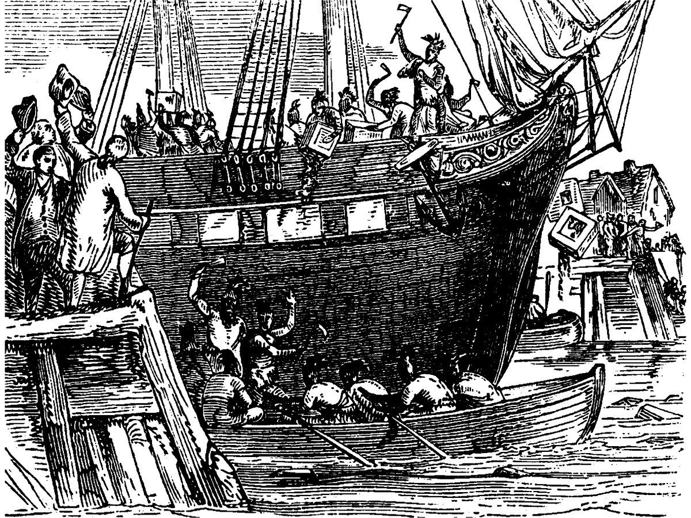

The colonists protested the taxes and got the Stamp Act of 1765 repealed as well as its replacement, the Townshend Acts, but the symbolic tax on tea remained. A temporary lull in conflict between 1770 and 1773 ended with the Boston Tea Party, conducted by a network of Boston agitators reacting to the Massachusetts governor’s attempt to enforce the law. The Tea Party solidified British resolve against the upstart colonists.

In response to the Tea Party, the British imposed the Intolerable Acts, coincidentally passing the Quebec Act at the same time. The Quebec Act was the most outrageous of the acts. It essentially gave back all the territory won by the colonists in the French and Indian Wars. These twin actions aroused ferocious American resistance throughout the colonies and led directly to the calling of the First Continental Congress and the clash of arms at Lexington and Concord.
As the two sides prepared for war, the British enjoyed the advantages of a larger population, a professionally trained militia, and much greater economic strength. The greatest American asset was the deep commitment of those identifying as patriots, who were ready to sacrifice for their rights.